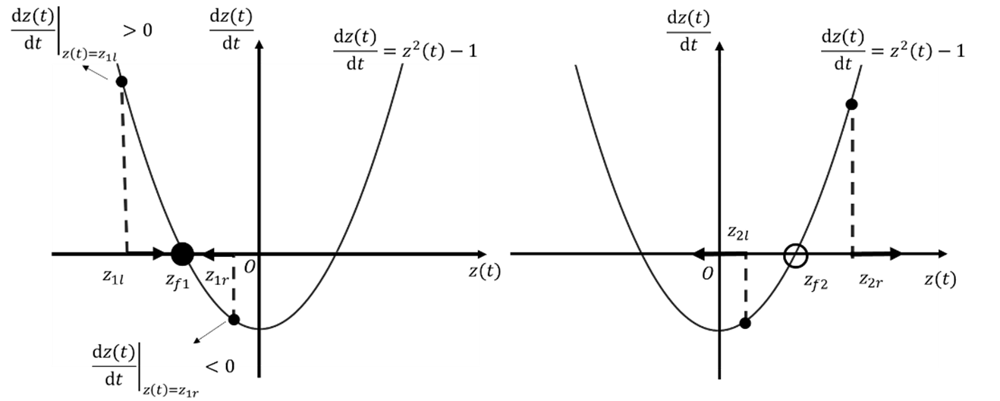

学习笔记-控制之美-控制理论从传递函数到状态空间
【学习笔记】控制之美-控制理论从传递函数到状态空间
动态系统建模-传递函数
动态系统建模-状态空间方程
状态空间方程
状态空间方程表达式
用一系列的一阶微分方程表达系统的输入、输出及状态变量。
对于n阶微分方程，可以设置n个状态变量，将n阶微分方程拆解为n个一阶微分方程，故系统的阶数等于状态变量的个数。
一般形式：
符号说明：
| 符号 | 名称 | 维度 |
|---|---|---|
| $\boldsymbol{z}(t)$ | 状态变量 | n x 1 |
| $\boldsymbol{y}(t)$ | 系统输出 | m x 1 |
| $\boldsymbol{u}(t)$ | 系统输入 | p x 1 |
| $\boldsymbol{A}$ | 状态矩阵 | n x n |
| $\boldsymbol{B}$ | 输入矩阵 | n x p |
| $\boldsymbol{C}$ | 输出矩阵 | m x n |
| $\boldsymbol{D}$ | 直接传递矩阵 | m x p |
状态空间方程可以处理单输入单输出（Single Input Single Output, SISO）系统，也可以处理多输入多输出（Multiple Inputs Multiple Outputs, MIMO）系统。
状态空间方程与传递函数的关系
对状态空间方程等号左右两端同时作拉普拉斯变换：
得到：
调整，得到系统传递函数：
利用矩阵求逆公式：
最终得到：
分析上式可知，若令分母等于0，$\left| s\boldsymbol{I}-\boldsymbol{A} \right|=0$得到的s有两层含义：
- 从传递函数角度看，它是传递函数的极点；
- 从状态矩阵的角度看，它是矩阵$\boldsymbol{A}$的特征值。
故可得出结论：
状态矩阵的特征值与其所对应的单输入单输出传递函数的极点相同，极点决定了系统的表现。
相平面与相轨迹分析
对于状态空间方程，使用相平面与相轨迹的方法可以快速有效地分析系统。
相平面数学基础——特征值与特征向量
对于给定方阵$\boldsymbol{A}$，它的特征向量$\boldsymbol{v}$经过矩阵$\boldsymbol{A}$线性变换后，得到的向量仍然与$\boldsymbol{v}$在同一条直线上，即：
其中，$\boldsymbol{v}$为$\boldsymbol{A}$的特征向量，$\lambda$为$\boldsymbol{A}$的特征值。
根据上式：
根据矩阵理论，如果上式有非零解，则$\left( \boldsymbol{A}-\lambda \boldsymbol{I} \right)$的行列式为0，即：
代值即可解出特征值，例如：
称为矩阵$\boldsymbol{A}$的特征方程，
再将特征值回代第一条式子即可解出特征向量。
特征值与特征向量应用——线性方程组解耦
耦合是指一个系统里两个或以上的状态变量存在相互影响、相互关联的作用。解耦就是解除耦合，就是将状态矩阵对角化。
考虑一个包含两个状态变量的二阶系统，不考虑输入输出，写成状态空间方程：
先定义过渡矩阵(Transition Matrix)：
其中$\boldsymbol{v}_1$和$\boldsymbol{v}_2$是矩阵$\boldsymbol{A}$对应的两个特征向量，可得
定义新的状态变量$\bar{\boldsymbol{z}}\left( t \right) $，令
代入状态空间方程：
左乘$\boldsymbol{P}^{-1}$得到：
这就完成了线性方程组的解耦，解出$\bar{\boldsymbol{z}}(t)$后再左乘$\boldsymbol{P}$就能得到原状态变量$\boldsymbol{z}(t)$
一维相轨迹

二维相轨迹
动态系统分析方法
- 描述系统：通过语言描述系统特性
- 数学分析：使用数学工具对系统进行解析
- 结果与讨论：分析结果和进行深层次的思考与讨论
 微信
微信 支付宝
支付宝